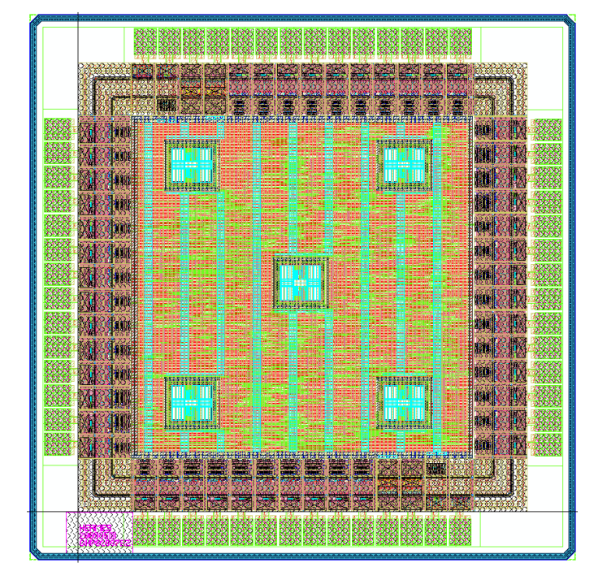

Menu:
Structured ASIC development
As fabrication process technology continues to advance, mask set costs have become prohibitively expensive.
Structured ASICs (SASICs) offer a middle ground in price and performance between ASICs and FPGAs by sharing masks across different designs.
We propose two SASIC architectures that are programmed using a standard-cell compatible design flow.
Results over a set of benchmark circuits show that our AOI22 based SASIC had on average a 1.76x/1.41x increase in area/delay compared to ASICs, a considerable improvement compared with the 26.56x/5.09x increase for FPGAs.

References:
Thomas C.P. Chau, Philip H.W. Leong, Sam M.H. Ho, Brian P.W. Chan, Steve C.L. Yuen, Kong-Pang Pun, Oliver C.S. Choy, and Xinan Wang, "A Comparison of Via-programmable Gate Array Logic Cell Circuits," in Proc. International Symposium on Field-Programmable Gate Arrays (FPGA), pp. 53-61, 2009. [pdf]
Thomas C.P. Chau, David W.L. Wu, Yan-Qing Ai, Brian P.W. Chan, Sam M.H. Ho, Oscar K.L. Lau, Kong-Pang Pun, Oliver C.S. Choy, Philip H.W. Leong, "Design of a Single Layer Programmable Structured ASIC Library," in Proc. International Symposium on Design and Diagnostics of Electronic Circuits and Systems (DDECS), pp. 32-35, 2010. [pdf]
Man-Ho Ho, Yan-Qing Ai, Thomas C.P. Chau, Steve C.L. Yuen, Chiu-Sing Choy, Philip H.W. Leong and Kong-Pang Pun, "Architecture and Design Flow for a Highly Efficient Structured ASIC," IEEE Transactions on Very Large Scale Integration (VLSI) Systems, vol.21, no. 3, pp. 424-433, 2013. [pdf]
Sam M.H. Ho, Steve C.L. Yuen, Hiu Ching Poon, Thomas C.P. Chau, Yan-Qing Ai, Philip H.W. Leong, Oliver C.S. Choy and Kong-Pang Pun, "Structured ASIC:Methodology and Comparison," in Proc. International Conference on Field-Programmable Technology (FPT), pp. 377-380, 2010. [pdf]
Steve C.L. Yuen, Yan-Qing Ai, Brian P.W. Chan, Thomas C.P. Chau, Sam M.H. Ho, Oscar K.L. Lau, Kong-Pang Pun, Philip H.W. Leong, Oliver C.S. Choy, "Rapid Prototyping on a Structured ASIC Fabric," in Proc. Asia and South Pacific Design Automation Conference (ASP-DAC), pp. 379 - 380, 2010. [pdf]